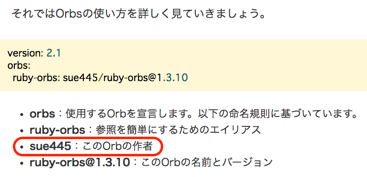

Orbsベストプラクティス
sue445
2019/01/30 第1回CircleCI ユーザーコミュニティイベント
自己紹介 
- Go Sueyoshi a.k.a @sue445
- ピクシブ所属
- 自称CIマニアでCircleCI, Wercker, Travis CI, GitLab CI, Jenkins辺りは3〜4年くらい利用してる
「このOrbの作者」です
https://codezine.jp/article/detail/11306?p=4

今日話すこと
- Orbsについて
- 自作Orbsの紹介
- Orbsのテストについて
- Orbsを作る時の勘所
最初にまとめ
- Orbsを活用することでリポジトリをまたいだ
.circleci/config.ymlのリファクタリングと処理の共通化が可能になる - Orbsのテストは難しい
Orbsとは
-
.circleci/config.ymlをモジュール化する仕組み- 複数リポジトリで共通する処理を1箇所に集約できる
- 自分が作ったorbを配布もできる
- WerckerやGitLab CIにも似たような仕組はある
CircleCI + Rubyあるある
- 「CircleCIのキャッシュを活かしつつ
bundle installするstep」を書いている - Ruby以外でもこういうのはよくあることだと思う
jobs:
rspec:
docker:
- image: circleci/ruby
steps:
- checkout
# 毎回フルでbundle installするとビルドが遅くなるのでキャッシュがあればとってくる
- restore_cache:
keys:
- v1-bundle-{{ checksum "Gemfile.lock" }}
- v1-bundle
- run:
name: bundle install
command: |
bundle install --jobs=4 --retry=3 --path vendor/bundle
# 古いgemが残ってるとキャッシュが肥大化してビルドが遅くなるので消す
bundle clean
# Gemfile.lockに書かれてるbundlerのバージョンとCIのdockerイメージに入ってる
# bundlerのバージョンに差異があるとGemfile.lockが更新されてchecksumが一致しなくなるので元に戻す
gem install restore_bundled_with --no-document
restore-bundled-with
- save_cache:
key: v1-bundle-{{ checksum "Gemfile.lock" }}
paths:
- ~/app/vendor/bundle
# ↑↑↑↑↑↑ここから上は毎回同じ↑↑↑↑↑
- run: bundle exec rake test
つらみ
- さっきのはrspecだけだけど、rspecとrubocopを並列実行したい時は同じようなのが必要
- Rubyでアプリを作っていると
bundle installの利用頻度は多い
- Rubyでアプリを作っていると
- yamlのkeyで抽出してmergeすれば多少DRYにはなるが、リポジトリをまたがると無理なので同じのを何箇所も書く必要がある
- CircleCIだけで個人アプリ10個もメンテしてると全部にコピペが大量発生
- 個人アプリならそれなりに一貫性はあるのだが、社内リポジトリを見るとだいたいみんな同じことやってるんだけどアプリによって微妙に記述が違う
- 参考にしたくてもデファクトがないのでどれを信用していいのか分からない
作ったもの：sue445/ruby-orbs
- https://circleci.com/orbs/registry/orb/sue445/ruby-orbs
- https://github.com/sue445/circleci-ruby-orbs
- Orbsが正式リリースされる1週間前くらいから作ってたんだけど、急にOrbsが正式リリースされたので急いで作りきった
ruby-orbs/bundle-install
- さっきのくっそ長い処理が全部
ruby-orbs/bundle-installに集約されている - 16行 -> 1行
jobs:
rspec:
docker:
- image: circleci/ruby
steps:
- checkout
- ruby-orbs/bundle-install
- run: bundle exec rspec
ruby-orbs/bundle-update-pr
- https://github.com/masutaka/circleci-bundle-update-pr （CircleCIで自動bundle updateしてPRを作るgem）をorb化したもの
- スニペット（gemを使うためのお膳立て）が結構長くてコピペして回るのがつらい量なので、可能な限り隠蔽したかった
Before
https://github.com/masutaka/circleci-bundle-update-pr/blob/v1.14.1/README.md#configure-circleyml
version: 2
jobs:
build:
# snip
continuous_bundle_update:
docker:
- image: ruby:2.4.2-alpine
working_directory: /work
steps:
- run:
name: Install System Dependencies
command: |
# See also https://circleci.com/docs/2.0/custom-images/#adding-required-and-custom-tools-or-files
apk add --update --no-cache git openssh-client tar gzip ca-certificates \
tzdata
gem install -N bundler
- run:
name: Set timezone to Asia/Tokyo
command: cp /usr/share/zoneinfo/Asia/Tokyo /etc/localtime
- checkout
- restore_cache:
name: Restore bundler cache
keys:
- gems-{{ .Environment.COMMON_CACHE_KEY }}-{{ checksum "Gemfile.lock" }}
- gems-{{ .Environment.COMMON_CACHE_KEY }}-
- run:
name: Setup requirements for continuous bundle update
command: gem install -N circleci-bundle-update-pr
- deploy:
name: Continuous bundle update
command: circleci-bundle-update-pr <username> <email>
workflows:
version: 2
build:
jobs:
- build:
# snip
nightly:
triggers:
- schedule:
cron: "00 10 * * 5"
filters:
branches:
only: master
jobs:
- continuous_bundle_update
After
jobs が完全に不要で workflows だけになった
version: 2.1
workflows:
version: 2
nightly:
triggers:
- schedule:
cron: "00 10 * * 5"
filters:
branches:
only: master
jobs:
- ruby-orbs/bundle-update-pr:
image: "circleci/ruby:2.5.3"
pre-bundle-update-pr:
- run:
name: "Set timezone to Asia/Tokyo"
command: "sudo cp /usr/share/zoneinfo/Asia/Tokyo /etc/localtime"
- ruby-orbs/bundle-install
Orbsの仕組み
Orbsという外部のymlファイルを自分の.circleci/config.ymlにincludeしてコンパイルして、インライン展開した新しい .circleci/config,yml を生成する
version: 2.1
orbs:
# これがインライン展開される
hello: namespace/orb@dev:0.0.1
workflows:
hello-workflow:
jobs:
- hello/hello-build
CircleCIが .circleci/config.ymlをコンパイル
これが実際にCircleCIのジョブとして実行される
version: 2
jobs:
# namespace/orbに定義されているhello/hello-buildがインライン展開された
hello/hello-build:
docker:
- image: circleci/buildpack-deps:curl-browsers
steps:
- run:
command: echo "Hello, build!"
workflows:
hello-workflow:
jobs:
- hello/hello-build
version: 2
Orbsのテスト手法
c.f. 公式ドキュメント
- Schema Validation
-
config.ymlのシンタックスチェック
-
- Expansion Testing
-
config.ymlをコンパイルしてOrbsをインライン化するテスト
-
- Runtime Testing
- Orbsをpublishしないでコンテナ内でダミーのジョブを実行してテストを行う
- Integration Testing
- Orbsを実際にpublishして、テスト用のリポジトリで実際にそのOrbsを読み込ませてテストを行う
例）sue445/ruby-orbsのIntegration Testing

Orbsを作る時の勘所 (1/2)
- シェルとCircleCIの機能を連携する部分がむいている
- 例）「
restore_cache-> 言語ごとのインストール処理（Rubyならbundle install） ->save_cache」をひとまとめにする
- 例）「
- 複数のリポジトリで同じことを書いているならOrbs化チャンス
Orbsを作る時の勘所 (2/2)
- Orbsそのものはテストしづらいので、Orbs側は既存機能の呼び出しに専念するのがいい
- 前述の通り、Orbsを本気でテストしようとするとインテグレーションテスト用のリポジトリが必要になって大変
- コアロジックはOrbsとは別で作った方がテストしやすいし、単体で使えるので汎用性が高くなる
合わせて読みたい
- 個人ブログにだいたい書いてます
まとめ
- Orbsを活用することでリポジトリをまたいだ
.circleci/config.ymlのリファクタリングと処理の共通化が可能になる - Orbsのテストは難しい